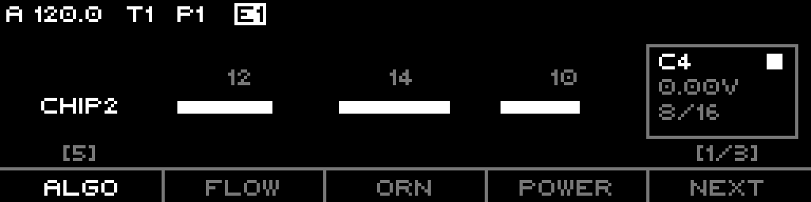
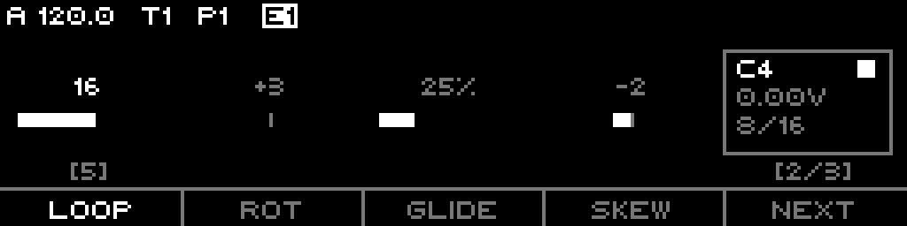
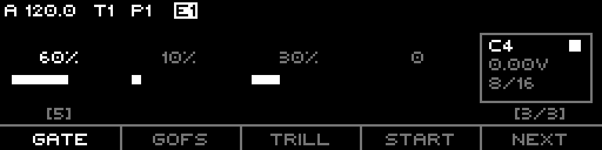

A generative algorithm sequencer. Run one of 16 named algorithms from a deterministic seed, then reshape its output with loop, skew, glide, trills, masking, and scale.
The Tuesday track stores no fixed step data — instead it runs one of 16 named algorithms (a port of the "Tuesday" generator) that produce notes, gates, and timing on every tick from a deterministic seed. Three knobs — Flow, Ornament, Power — drive that seed and shape the character; everything else (loop length, rotation, skew, glide, trills, masking, scale) reshapes the algorithm's output without touching what it generates.
The same Flow + Ornament always produce the same sequence until you reseed. So a Tuesday track is reproducible: dial in a phrase you like and it comes back. Reseed when you want a fresh draw of the same algorithm without changing your parameter settings.
Everything here is grounded in the firmware as built — defaults, ranges, enum members, key bindings, and step-grid maps come from the model, engine, and UI code.
A Tuesday track has no per-step note data in the usual sense. Instead it:
It is an algorithmic note source, not a step or sample sequencer. The sequence you hear is computed live, not stored.
The Algorithm param selects one of 16 generators (id 0-15). Each has its own note selection, rhythm, and character. Flow and Ornament seed the draw and bias structural decisions; Power gates density.
| # | Name | What it generates |
|---|---|---|
| 0 | Test | Simple stepped reference sequence — octave sweeps or a scale walk. Constant velocity. |
| 1 | TriTrance | Three overlapping polyrhythmic layers on a 3-beat cycle: tight, swung, then accented with grace-note trills. |
| 2 | Stomper | Alternating high/low octave "stomps" with slides and countdown rest periods. |
| 3 | Markov | First-order Markov chain over 8 scale degrees; next note drawn from a transition matrix. Accent always on. |
| 4 | Chip1 | Beat-synced chord arpeggio; chord stabs trigger a root/third/fifth trill. |
| 5 | Chip2 | Ascending/descending arpeggio with dynamic chord length (3-7 notes) and rhythmic deadtime gaps. |
| 6 | Wobble | Twin phasor (slow + fast) mapped to scale degrees; Ornament controls phase-2 probability, accents get high slide chance. |
| 7 | ScaleWlk | Stateful 7-note scale walker; Flow sets direction (≤7 walks down, >7 walks up). StepTrill fires rapid bursts. |
| 8 | Window | Twin phasor: slow anchor notes/accents over fast texture, with a Markov walk voice and periodic auto-mutation. |
| 9 | Minimal | Burst/silence alternation; burst sections density-gate staccato notes. Conservative glide and trill. |
| 10 | Ganz | Triple phasor (1×/5×/7×) on a 5-tuplet grid with phrase-skip muting and four note-selection modes. |
| 11 | Blake | Stable 4-note motif over an 8-bar breath LFO; real/ghost/whisper articulation and occasional sub-bass drops. |
| 12 | Aphex | Three independent polyrhythms (4/3/5-beat) with a modifier track and a bass-override track; collision stress. |
| 13 | Autech | 8-note pattern that mutates by rotation/mirror/inversion/shift on timer expiry; polyrhythm on off-grid beats. |
| 14 | StepWave | Scale-degree walk with polyrhythm; Flow biases direction, Ornament selects rapid vs spread timing. |
| 15 | Turing | Turing shift register with live drift; Power sets flip probability, Ornament sets range. |
17 - Power, so Power 0 means no notes (max cooldown), Power 16 means notes nearly every step. Skew bends Power across the loop (Part 4).The algorithm emits a base gate ratio (nominally 75%, up to 200%). Two knobs scale it:
gateLength, 0-100%, default 50%) scales the algorithm's gate ratio into actual gate-on ticks. Accented notes extend the gate by 50%.gateOffset, 0-100%, default 0%) scales the algorithm's intended onset offset. At 50% it applies the algorithm's offset 1×; at 100% it doubles it, pushing the gate later within the step.| Param | List name | Range / default | Effect |
|---|---|---|---|
| Glide | Glide | 0-100%, default 50% | Slide probability. When the algorithm flags a slide and Glide > 0, CV interpolates to the target over a slide window (longer with higher Glide). |
| Trill | Old Trill | 0-100%, default 50% | Re-trigger probability. Combined with the algorithm's articulation indicator; when it fires the gate ratchets (fires twice). List View only. |
| StepTrill | Trill (Edit page) | 0-100%, default 0% | Intra-step subdivision. When the algorithm requests a trill count >1 and StepTrill > 0, the step subdivides into rapid micro-gates with independent pitches. |
CvUpdateMode (List View, CV Mode) sets when CV moves:
Output is always quantized. The generated scale degree + octave runs through the selected scale, then Transpose (in scale degrees), Root Note offset, and the Octave offset are applied to reach the final CV.
LoopLength indexes a fixed table of lengths. Index 0 is Inf (infinite/evolving, the default). Indices 1-29 map to: 1-16, then 19, 21, 24, 32, 35, 42, 48, 56, 64, 95, 96, 127, 128 steps.
Rotate (default 0) cyclically shifts the playback position within a finite loop. Its range is clamped to ±(loop length − 1), so it only applies when Loop is finite — the Edit page shows N/A for infinite loops, and rotation is forced to 0.
Skew (-8..+8, default 0) bends Power across the loop:
Start (0-16, default 0) delays note generation by that many steps from track start. The mask system can extend this further with prime-number delays (Part 5).
Masking filters the algorithm's output on and off in time, carving polyrhythms and rests out of the generated stream. While a tick is masked, the gate stays off.
MaskParameter (0-15):
In FREE mode the mask alternates allow/mask in blocks of maskValue ticks. In the grid-synced modes the masked block is maskValue ticks and the allowed block is derived from a quarter-note grid.
| Mode | Behavior |
|---|---|
| FREE (default) | Mask toggles purely by tick count, free-running. |
| QRT | Allowed block aligns to a quarter-note grid. |
| 1.5Q | Allowed block aligns to a 1.5 quarter-note grid. |
| 3QRT | Allowed block aligns to a 3 quarter-note grid. |
| Mode | Step |
|---|---|
| NO PROG (default) | Static mask, no advance. |
| PROG+1 | Advance the prime index by 1 per cycle. |
| PROG+5 | Advance by 5. |
| PROG+7 | Advance by 7. |
| Param | Range | Default | Notes |
|---|---|---|---|
| Divisor | 1-768 | 12 (1/16) | Ticks per step at the hardware clock. Edited by known musical divisors. |
| Clock Mult | 50-150% | 100% (1.00x) | Scales tempo against the divisor; higher = faster steps. |
| Reset Measure | 0-128 bars | 0 (off) | Bar-based reset interval. 0 = off. |
| Play Mode | Aligned / Free | Aligned | Track-level. Aligned steps on the tick grid; Free derives the step from wallclock position. |
The effective step length combines Divisor and Clock Mult: a higher multiplier shortens the divisor and speeds up stepping.
The Edit page (Page+S0) shows 3 parameter pages of 4 slots each, plus a status box and a jam step grid. F1-F4 select a slot for the encoder; F5 (NEXT) advances to the next parameter page; Shift+F5 reseeds.
| Page | F1 | F2 | F3 | F4 |
|---|---|---|---|---|
| 1 | ALGO (Algorithm) | FLOW (Flow) | ORN (Ornament) | POWER (Power) |
| 2 | LOOP (Loop Length) | ROT (Rotate) | GLIDE (Glide) | SKEW (Skew) |
| 3 | GATE (Gate Length) | GOFS (Gate Offset) | TRILL (StepTrill) | START (Start) |
The footer shows the four short names plus NEXT; a [page/3] indicator sits to the right and [algo#] above F1. The status box (top right) shows the current note name + gate indicator, the CV voltage, and the step/loop position.



The encoder edits the selected slot's parameter. Shift accelerates the percentage params (Glide, Trill, StepTrill, Gate Length, Gate Offset, Clock Mult) by ×10.
The step keypad performs hands-on edits without leaving the page. Top row increases / speeds up, bottom row decreases / slows down:
| Col | S1-8 (top) | S9-16 (bottom) |
|---|---|---|
| 1 | Octave + | Octave − |
| 2 | Transpose + | Transpose − |
| 3 | Root Note + | Root Note − |
| 4 | Divisor up (straight, faster) | Divisor down (straight, slower) |
| 5 | Divisor up (triplet, faster) | Divisor down (triplet, slower) |
| 6 | Divisor ÷2 (faster) | Divisor ×2 (slower) |
| 7 | Mask + | Mask − |
| 8 | Loop + | Loop − |
Shift modifiers:
LEDs: top row lights green when the value is above its default (octave/transpose/root up, divisor faster, mask up); bottom row lights red when below.
Long-press the menu button:
Holding Page plus a bottom-row step performs clipboard/randomize actions:
| Step | Action |
|---|---|
| S9 | Copy to slot 1 |
| S10 | Copy to slot 2 |
| S11 | Copy to slot 3 |
| S12 | Paste from slot 1 |
| S13 | Paste from slot 2 |
| S14 | Paste from slot 3 |
| S15 | Randomize |
| S16 | (inert) |
LEDs: copy and randomize steps light; paste steps light only when their clipboard slot holds valid data.
The List View hosts every sequence parameter in order: Algorithm, Flow, Ornament, Power, Loop Length, Rotate, Glide, Skew, Gate Length, CV Mode, Old Trill, Start, Octave, Transpose, Divisor, Clock Mult, Reset Measure, Scale, Root Note, Scale Rotate, Mask Param, Time Mode, Mask Prog. The only context action here is INIT (clear the sequence).
| Param | Range | Default |
|---|---|---|
| Algorithm | 0-15 | 0 (Test) |
| Flow | 0-16 | 0 |
| Ornament | 0-16 | 0 |
| Power | 0-16 | 0 |
| Loop Length | Inf, 1-128 (29 indices) | Inf |
| Rotate | ±(loop−1) | 0 |
| Glide | 0-100% | 50% |
| Skew | -8..+8 | 0 |
| Gate Length | 0-100% | 50% |
| CV Mode | Free / Gated | Free |
| Old Trill | 0-100% | 50% |
| StepTrill (Edit "TRILL") | 0-100% | 0% |
| Start | 0-16 | 0 |
| Octave | -10..+10 | 0 |
| Transpose | -11..+11 | 0 |
| Divisor | 1-768 | 12 (1/16) |
| Clock Mult | 50-150% | 100% (1.00x) |
| Reset Measure | 0-128 bars | 0 (off) |
| Gate Offset | 0-100% | 0% |
| Scale | Default / Semitones / named | Default (project) |
| Root Note | Default / C..B | Default (project) |
| Scale Rotate | Default / 0-31 | Default (project) |
| Mask Param | ALL, 1-14 primes, NONE | ALL |
| Time Mode | FREE / QRT / 1.5Q / 3QRT | FREE |
| Mask Prog | NO PROG / +1 / +5 / +7 | NO PROG |
These Tuesday params are routing targets (all per-sequence):
Algorithm (0-15)Flow (0-16)Ornament (0-16)Power (0-16)Glide (0-100%)Trill (Old Trill, 0-100%)StepTrill (0-100%)GateLength (0-100%)GateOffset (0-100%)RotateOctaveTransposeDivisorClockMultScale, RootNote (via the shared scale targets)